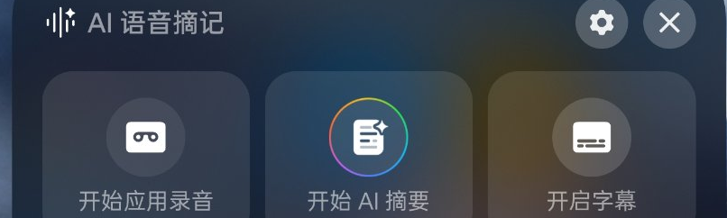
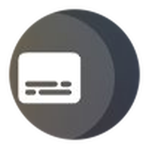

一加 11「AI 语音摘记」浮窗界面参考规范
基于实机截图逐像素实测，把一加 11（ColorOS / OxygenOS）「AI 语音摘记」浮窗的
布局结构、配色、图标整理为可执行的约束条款，用于规范后续将本项目
（d:\Program Files\AI语音摘要 下的 PyQt6 浮动面板）改造为同款界面。
1. 功能概述
「AI 语音摘记」是一加/OPPO ColorOS 的端侧 AI 语音能力集合，核心是：把通话、会议、视频等语音内容一键转写、摘要，并同步显示字幕与翻译。 官方描述为：重要语音点一下，“看得见、记得住”。[1]
- 能力范围：音视频通话、在线会议、视频等场景的实时转写 + AI 摘要 + 实时字幕/翻译[1]。
- 系统门槛：需 ColorOS 15.0.2 及以上，且并非所有机型都支持。一加 11 可升级到 ColorOS/OxygenOS 15，并被纳入 OxygenOS 16 推送。[2][3][8]
- 三个入口：智能侧边栏、控制中心、设置（辅助功能/便捷工具）。[2]
- 浮窗三动作：
开始应用录音、开始 AI 摘要、开启字幕（与实机截图逐字一致）。[9]
2. 布局结构
浮窗是一个无边框、置顶、深色圆角、可拖动的横向悬浮面板，整体近似“一条宽扁的圆角卡片条”。 自上而下分两个区：顶部标题行 + 中部三张功能卡片。

① 标题行 ③ 右上按钮 ② 功能卡片 ×3分区说明（实测）
| 区域 | 构成 | 实测要点 |
|---|---|---|
| A · 标题行 | 左：白色声波图标（约 5 根高低不等的圆角竖条）+ 右上角一枚白色四角星芒 + 标题「AI 语音摘记」；右：齿轮、×（白色字形，置于浅色圆角小按钮片上）。 | 图标为纯白 #FFFFFF；标题文字为近白偏冷的浅灰（不是纯白，也不是金色）；右上两枚按钮片实测约 #545F73。 |
| B · 功能卡片区 | 三张等宽等高、横向排列卡片；每张＝居中图标（上）＋ 文案（下）；整卡为一个按钮。 | 卡片宽大于高（约 248×154 px，宽高比 ≈ 1.6）；卡片底色是半透明白叠加，会透出壁纸颜色（左偏冷、右偏暖）。 |
| C · 录音状态区 | 触发录音后，卡片区切换为：计时 + 电平 + 「暂停 / 停止并保存」按钮。 | 该状态未出现在本张截图内，以下尺寸按本项目现有实现沿用（属未经截图核验项）。 |
结构示意（只标分区，不画外观）
图标＋「开始应用录音」
图标＋「开始 AI 摘要」
图标＋「开启字幕」
实测尺寸与比例
下表数据来自 859×1920 的实机截图（面板与原图比例相同，可直接换算）。
| 项 | 实测（截图 px） | 比例 / 备注 |
|---|---|---|
| 面板整体 | ≈ 804 × 242 | 宽高比 ≈ 3.3 : 1；约占屏宽 93%，是一个“宽扁”浮窗 |
| 面板圆角 | ≈ 24 px | 大圆角，柔和 |
| 面板内边距 | ≈ 18 px | 四周接近等距 |
| 标题行高 | ≈ 65 px | 约占面板高 27% |
| 卡片尺寸 | ≈ 248 × 154 | 宽高比 ≈ 1.6 : 1（宽大于高） |
| 卡片间距 / 圆角 | ≈ 12 px / 24 px | 三等分排列 |
| 图标圆盘直径 | ≈ 82 px | 约占卡片宽 33% |
| 右上按钮片 | ≈ 54 × 54 px | 圆角小方块 |
330 × 168（宽高比 1.96:1），卡片约 90 × 106（宽高比 0.85:1，竖高型）。
一加浮窗则明显更“宽扁”：面板 3.3:1、卡片 1.6:1。
要做到“一样”，需把面板显著加宽、卡片改为宽大于高（例如保持高 168 → 面板宽约 550–560，卡片约 165×92）。
3. 配色方案
整体是深色毛玻璃（frosted glass）：面板底为一层半透明深蓝，卡片、图标圆盘、按钮片都用低透明度白逐层叠加出层次， 因此整块面板会透出背后的壁纸颜色——左侧偏冷、右侧偏暖，这是本设计的重要特征。
实测主色板
（随壁纸浮动）
暖侧因壁纸偏 #5A4E38
（实测最亮像素 ~(169,177,190)）
图标渐变环（“AI 摘要”专用）
摘要卡片图标外圈是一道细的、全光谱的彩色圆环（conic 渐变），环内白色文档。实测色相随角度连续变化，近似顺序（顺时针）：
上表为环上采样值（环很细，受深色底与抗锯齿影响偏暗；实际观感比数值更鲜亮，为一道完整彩虹环）。
ACCENT，已被误当作一加设计）。
② 上一版把面板底写成 #2E3442、晨 卡片写死为不透明色 —— 实测面板底更深（≈ #1D2437）且整体半透明，卡片/圆盘/按钮片都是半透明白叠加。
设计语言背景：水生设计（Aquamorphic Design）
ColorOS 13 起采用「水生设计」，灵感取自水的流动与自然：色彩萃取自海平线 24 小时日出日落的色相变化，锚定在一个暖色调的蓝； 图标重绘为简洁线条、方向性明确、高对比；整体以圆角与柔和水感动效呈现。[4][5] 本浮窗的深蓝毛玻璃底 + 纯白图标 + 细彩环，正是这套语言的落地。
4. 图标清单
以下全部为从实机截图裁取的真实像素（非重绘、非近似）。共同风格：白色实心字形 + 深色镂空细节（镂空处透出卡片底色）， 仅“AI 摘要”一张卡带彩色渐变环。
| 位置 | 真实图像 | 形态描述 |
|---|---|---|
| 标题左侧 | 声波：约 5 根高低不等的圆角竖条（中间偏高）；右上角一枚四角星芒。纯白。 | |
| 卡片 1 · 开始应用录音 | 白色实心圆角矩形，内部镂空出“录音带/双卷轴”形状（两个圆 + 中间连接），置于浅色圆盘上。 | |
| 卡片 2 · 开始 AI 摘要 | 外圈彩色渐变环；内部白色实心文档（带折角缺口），文档内有灰色横线（长短不一的文本行），右上叠一枚白色四角星芒。 | |
| 卡片 3 · 开启字幕 |  |
白色实心圆角矩形，内部镂空出两行字幕条（长短不一）。置于浅色圆盘上。 |
| 右上 · 设置 |  |
白色圆浑齿轮（6 个圆角齿 + 中心孔），置于浅色圆角按钮片上。 |
| 右上 · 关闭 | 白色细线 ×，置于浅色圆角按钮片上。 |
assets/panel_record.png、panel_summary.png、panel_subtitle.png，
并在 [panel.py](file:///d:/Program%20Files/AI%E8%AF%AD%E9%9F%B3%E6%91%98%E8%A6%81/sysrec/panel.py) 中以 QPainter 手绘兜底。
改造时应优先使用截图提取的真实位图；本报告 assets/op_*.png 为更高保真的裁图，可直接复用。手绘兜底必须改为“实心填充 + 镂空”，不得再用描边线稿。
5. 触发路径与状态
一加提供三个入口唤起同一浮窗，浮窗内再进入三种功能态；本项目保留同名入口语义。
flowchart LR
S1["智能侧边栏"] --> P["AI 语音摘记 浮窗"]
S2["控制中心"] --> P
S3["设置·便捷工具"] --> P
P --> A1["开始应用录音"]
P --> A2["开始 AI 摘要"]
P --> A3["开启字幕"]
A1 --> R["录音状态区<br/>计时+电平+暂停/停止"]
关键交互约束
- 卡片悬停仅提亮底色，不做缩放/位移，避免“跳动”。
- 按住面板任意空白或卡片拖动 = 移动浮窗；拖动后松手不触发点击。
- 录音态：卡片区隐藏，改显计时/电平/按钮；结束时回到三卡片态。
- 轻提示在面板底部短暂显示后自动消失，不弹独立弹窗。
6. 映射到本项目：改造约束清单
下表把“一加 11 同款”翻译成对 sysrec/panel.py 等文件的具体约束。
凡标注“需改”的项，都是本次实测发现与实机不符、必须调整的红线。
| 维度 | 一加 11 实机（实测目标） | 本项目现状 | 要求 |
|---|---|---|---|
| 面板形态 | 无边框、置顶、深色圆角浮窗、可拖动 | Frameless + StaysOnTop + Tool | 已对齐 |
| 面板比例 | 宽高比 ≈ 3.3 : 1（宽扁） | 330×168 ≈ 1.96 : 1 | 需改：加宽至 ≈ 3.3 : 1 |
| 卡片比例 | 约 248×154 ≈ 1.6 : 1（宽大于高） | 约 90×106 ≈ 0.85 : 1（竖高） | 需改：改为宽大于高 |
| 面板圆角 | ≈ 24 px | 20 px | 需改：20 → 24 px |
| 面板底色 | 半透明深蓝 ≈ #1D2437（随壁纸浮动） | rgba(46,52,66,235) | 需改：更深、更透 |
| 毛玻璃 | 整块面板透出壁纸（左冷右暖） | 整窗 opacity 0.80，无背景模糊 | 需改：加背景模糊/通透底 |
| 卡片底 / 悬停 | 半透明白叠加（≈13% / 悬停更亮） | #21FFFFFF / #30FFFFFF | 方向一致，微调即可 |
| 图标圆盘 | ≈ #434C5B（≈8% 白叠卡片） | ≈ rgba(255,255,255,0.12) | 需改：圆盘应更含蓄 |
| 图标风格 | 白色实心填充 + 深色镂空 | 描边线稿 + 白圈（手绘兜底） | 需改：换实心/截取真图 |
| 标题图标 | 白色声波（约 5 条）+ 四角星芒 | 金色三竖条 #E8C86A | 需改：白色 + 加星芒 |
| 强调色 | 无金色强调；色相来自彩环 | ACCENT = #E8C86A（金） | 需改：取消金色强调 |
| 文字 | 近白偏冷、粗细分明 | #F2F0EA / #A8A39B | 需改：向冷白靠拢 |
| 右上按钮 | 浅色圆角片 + 纯白齿轮 / × | 无底色圆形，图标弱灰 | 需改：加浅色按钮片、图标转白 |
| 卡片文案 | 开始应用录音 / 开始 AI 摘要 / 开启字幕 | 完全一致 | 已对齐，勿改措辞 |
| 取色写法 | — | QSS 与 QColor 均需 #AARRGGBB | 不得写 rgba() 字符串给 QColor |
验收要点（Definition of Done）
- 面板为深色半透明圆角浮窗，比例≈3.3:1，可整体拖动，透出背景。
- 标题行为“白色声波 + 星芒 + AI 语音摘记 + 齿轮 + ×”，右上为浅色按钮片。
- 三张卡片宽大于高，文案与实机逐字一致。
- 卡片图标为白色实心字形 + 深色镂空；“AI 摘要”带细彩环。
- 卡片悬停仅提亮底色，不位移、不缩放。
- 无金色强调色；所有色值集中管理。
- 录音态计时/电平/按钮正常切换。